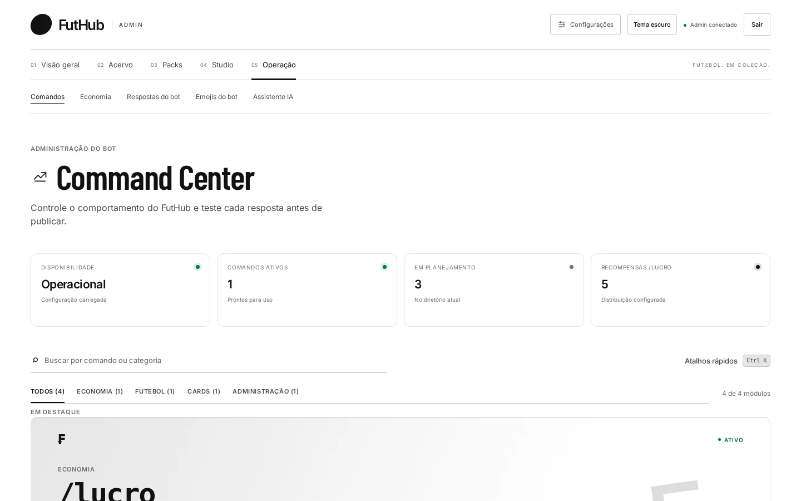
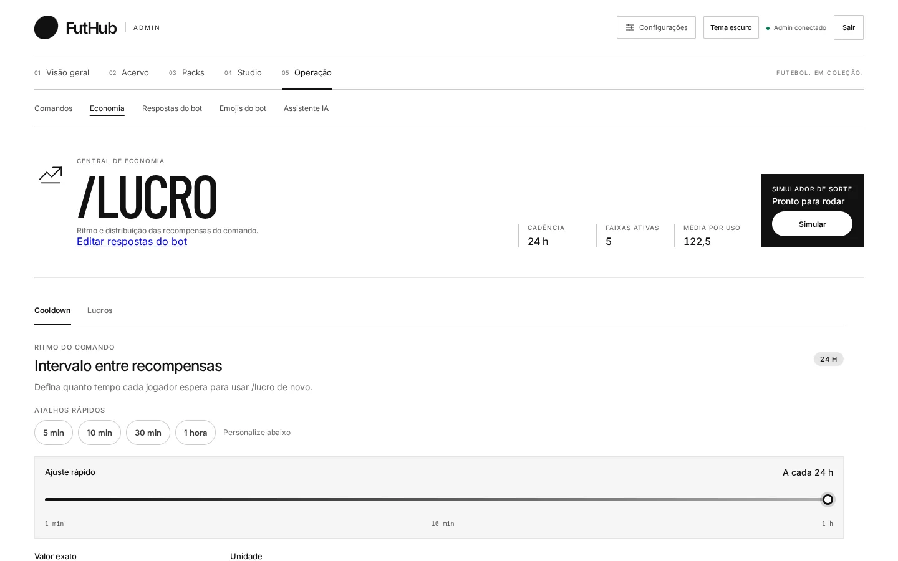

Como funciona
Intervalo, faixas, simulação.
Os números do topo (cadência, faixas ativas e média por uso) se atualizam enquanto você edita.

COOLDOWN
Intervalo entre recompensas
Defina quanto tempo cada jogador espera para usar o /lucro de novo. Há atalhos de 5 min, 10 min, 30 min e 1 hora, um controle deslizante e um campo para valor exato.
- Painel de impacto com resgates e moedas por hora e por dia
- “Simular passagem do tempo” mostra a espera do ponto de vista do jogador

LUCROS
Cada peso muda a chance
As recompensas são faixas com valor, peso e mensagem. A distribuição ao vivo recalcula a chance de cada faixa e o valor médio por resgate a cada mudança.
- Adicione, reordene e remova faixas
- Faixas de 50 a 1.000 moedas, de comum a raro
- Aviso quando a mudança pesa muito na economia

Atalho
Ctrl K em qualquer tela de comandos.
A paleta de ações leva direto para configurar o /lucro, editar as respostas, buscar comandos ou abrir o Studio. Os próximos módulos (/time, /coleção, /config) já aparecem no Command Center como “Em breve”.